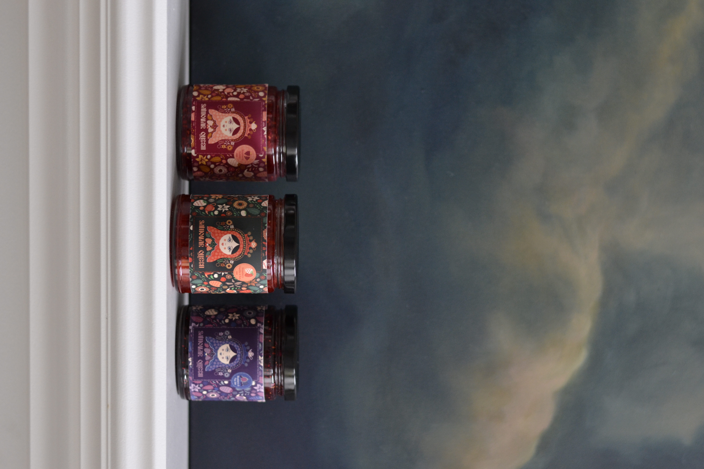
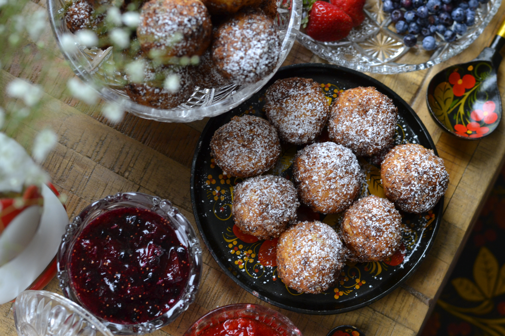

About Me
- Student Number
- 41044917
- College Program
- Interactive Media Design
- Course Code
- MTM6201-020 Web Development II
- Interesting Fact
- While on maternity leave, I started to create a food-related business for fun called "Samovar Queen" (my maternal side is Russian) which focused on European pastries (particularly "ponchiki", Russian doughnuts) and jams. While the business is on hold, I now have a book full of my own recipes for pastries and unique jams that I hope to use again for public consumption after the pandemic. Here are some fun images from my experience!

